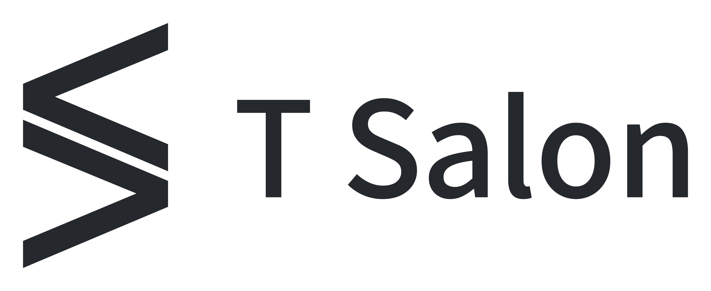

A COMMUNITY BUILT BY DEVELOPERS · SINCE 2016
从一行代码，
到一群人。

ARCHIVE / 2018.09第三届 Swift 开发者大会 · 北京
NOW / UPCOMING
Apple Dev Journey：独立开发者的商业化之路
TOPICS
Apple · AI · Embodied Intelligence
COMMUNITY
100+ 场活动
10 万+ 开发者

Apple · AI · Embodied Intelligence
100+ 场活动
10 万+ 开发者